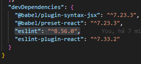
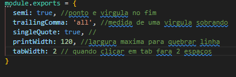
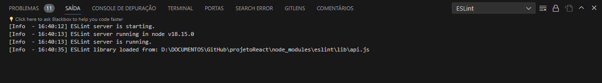

O projeto precisa de uma padronização, e para isso serpá usado algumas ferramentas, então vamos começar:
- EditorConfig: é uma extenção para o vsCode é so instala-lo na opções extenções, ele vai
padronizar o codico
depois de instalado é so criar na area da pasta do projeto o editorconfig
Essas são as configurações q o projeto vai usar.
# EditorConfig is awesome: https://EditorConfig.org
# top-most EditorConfig file
root = true
[*]
indent_style = space
indent_size = 2
end_of_line = lf
charset = utf-8
trim_trailing_whitespace = true
insert_final_newline = true
- Eslint: só clicar aq para ver toda a
explicação.
As configurações q iremos usar.
Instalando
npx eslint --init
-
configurações da instalação:
-
to check sytaxy and find problems
-
javascript modules(imports/export)
-
react
-
Does your project use typescript? No
-
were does your code run? precione a letra a
-
what format do you want your config file to be in? javascript
-
would you like to install them now? yes
-
Which package manager do you want to use? npm
Depois que instalar
precisarpá acessar o package.json do projeto instalado e procurar por
devDependencies la ira esta mostrando o q foi instalado.
Para evitar conflitos com react é preciso excluir a dependencia do eslint q foi instalada agora, pois o react traz
uma com ele:

esse que esta selecionado q será excluido
Agora o o proximo passo é excluir o package-lock.json a pasta node_modules,
agora o proximo passo e reinstalar o npm
npm install
-
Proximo passo é instalar o prettier
npm install -D prettier eslint-config-prettier eslint-plugin-prettier
Depois da instalação será preciso criar um arquivo na raiz do projeto com nome de .prettierrc.js,
no arquyivo será adicionado:

-
Agora é colocar umas configurações no json do vscode, para entrar nele é so ir em configurações e clicar no
quadrado a direita superior do programa:
e adicionar o seguinte codigo:
//auto fix on save
"editor.codeActionsOnSave": {
"source.fixAll.eslint": true,
"source.fixAll": true
},
-
Agora é conferir se deu tudo certo, para fazer isso é so ir em saída, selecione EsLint nas
extenções agora é conferir se esta tudo correto sem nenhum erro, segue a imagem:
